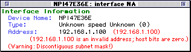
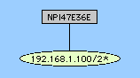

You can open the Show Info window on a device as described in the Monitor menu reference topic.
Use this procedure to set the Read-Only community string for one or more devices at once.
In the Add Device... dialog, enter an IP address in dotted-decimal notation .
IP addresses discovered using the IP discovery feature are fixed by default.
If you still can't make the router work with InterMapper, try the following:
We frequently hear of devices that appear to have high levels of discards and/or errors. They are usually orange on the map, and the status window shows a message like this:
Reason: Discards = 738: [1] sc0
The most likely reason that InterMapper shows a high rate of discards from a device is that the device is actually reporting these errors. It's common that when InterMapper reports errors (from its SNMP queries), the manufacturers' own monitoring tools will report zero errors. (It's also normal that the affected devices are operating normally, without problems, in this state.)
You can monitor these same variables with your SNMP Console to see if the same errors are reported there.
In usual network configurations, a device's subnet mask contains one bits in the left side of the number, and zero bits on the right. InterMapper can then use the convention that a subnet mask is described as the number of bits in the subnet mask, and uses the notation of "/24" to indicate a subnet mask of 24 one-bits, or "255.255.255.0". For more details, see the IP Addressing FAQ.

A subnet mask that has zero bits interspersed with the one bits in the left half of the value is often a configuration error. InterMapper points this out when you click and hold on a link: the status window resembles the figure at the right.
Normally, the address line contains the IP address and the subnet mask. This example shows a device whose IP address and subnet mask are set to the same value. This error is shown in the status window.

This is another indication that there's a problem with the subnet mask. The figure at the right shows the network oval with a discontiguous subnet mask. The /2* indicates that the subnet mask has zero bits in the left half; clicking on the link will give a status window similar to the one above.
This example comes from an HP printer that has a bug in its SNMP implementation. The subnet mask of the printer is actually configured properly, and the printer is working. However, the SNMP software in the printer is reporting the incorrect value (it's reporting the IP address) for the subnet mask. Help/Systems has reported this to HP.
Examine the network's Status window to determine whether the subnet masks are the same in both ovals. If the subnet masks are different, one of the devices connected to the oval with the "wrong" subnet mask probably has a misconfigured subnet mask. (Look for the device that is being polled with SNMP.)
Note: For devices polled with ICMP echoes, InterMapper tries to guess whether it should draw a link to the network that contains the IP address. If both network ovals look equally good, it may draw a link to the "wrong" one, or alternate between them.
It's possible for a router or host to have two or more configured IP addresses for a particular interface. This form of secondary IP addressing can be common if your addressing is in transition. Rather than bringing everything to a halt to change IP addresses, a network administrator will support two IP subnets on the same logical wire. All the devices in the subnet can then have their IP addresses changed at their leisure, rather than forcing everyone to change them all at once. When all the addresses have changed, the administrator usually gets rid of the old network number.
It's also possible that InterMapper is only reporting what it knows, and the information it is using is incomplete. This may be true of multi-point network technologies (like frame-relay clouds). If you find a situation where InterMapper is reporting multiple networks on a logical network and you know it's wrong, please send us email (support@intermapper.com) so we can figure out a way to make InterMapper's depictions more accurate.
We would also like to hear about a network with multiple IP network numbers where InterMapper does not show them correctly.
Yes.
For more information, see the Set Behavior window reference section of the Monitor Menu reference topic.
It is a normal situation for VLANs. InterMapper first traverses the ipAddrTable which maps IP addresses to ifIndex entries. If the ipAddrTable looks like:
ifIndex 1 --> 192.168.1.1/24
ifIndex 2 --> 192.168.2.1/24
ifIndex 3 --> 192.168.3.1/24
And the ifTable looks like:
Then the interface description for ifIndex 2 will be listed as "[[Not in ifTable]]".
The Server Information pane of the Server Settings window shows the number of devices you are monitoring.
This problem is related to having only one "target" address for each device, even though InterMapper knows the addresses of the other ports. When a device is discovered using TCP/IP, it gets added with a target address in IP. You can't switch to use RTMP because that's an AppleTalk-only protocol.